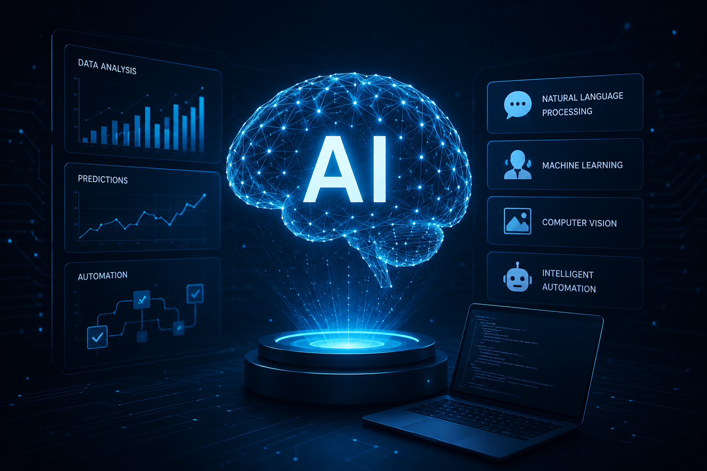

Process automation
Automate repetitive workflows — lead handling, triage, routing, and follow-up — so teams focus on high-value work.
We develop AI-powered solutions that optimize processes, deliver actionable insights, and unlock new product capabilities — integrated thoughtfully into the systems your team already relies on.

Not demos for demos’ sake — practical automation and intelligence tied to real business outcomes.
Automate repetitive workflows — lead handling, triage, routing, and follow-up — so teams focus on high-value work.
Chat and messaging experiences that qualify intent, answer questions, and hand off cleanly to humans when needed.
Surfaces that turn raw activity into decisions — trends, conversion signals, and operational visibility.
Embed intelligence inside your product where it improves the user experience, not where it adds noise.
Connect models and tools to your stack with clear data boundaries, fallbacks, and human oversight.
We start with the outcome, then choose the lightest AI that delivers it.
Identify where AI creates leverage — and where a simpler rule-based approach is better.
Fast pilots that prove value with real data before you commit to full build.
Production-ready flows with monitoring, fallbacks, and clear operator controls.
Track quality and outcomes, then iterate prompts, models, and UX based on results.
Where AI is already part of the product experience.
Straight answers about AI engagements.
Not always. Many useful automations start with existing workflows and light data. We’ll be honest when more data is required.
Our focus is augmentation — removing repetitive work and surfacing better decisions so your people move faster.
We design constrained flows, grounding, fallbacks, and human review where stakes are high — not open-ended chat with no guardrails.
Yes. We integrate with CRMs, messaging platforms, calendars, and internal APIs so AI lives inside your operating system.
Tell us the workflow or product gap — we’ll help you scope something practical and shippable.